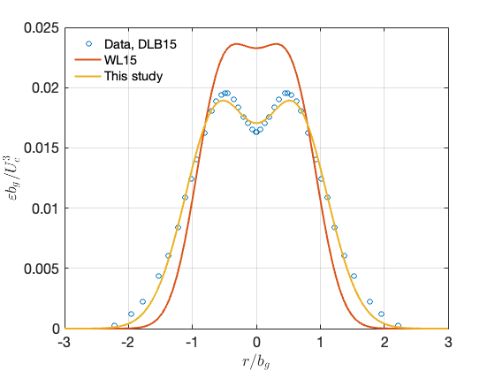

Contents
- The problem is extracted from Wang et al. (2020) in Physics in Fluids about a modeling of expiratory droplets in jets. The profiles of jet (velocity, turbulence kinetic energy, and dissipation rates as a function of location in the jet) are compared among two theoretical models and an experimental data. See details in Wang et al. (2020), Wei and Li (2015), Chan et al. (2014) and Darisse et al. (2015). See attached Matlab script and literature.
- plot normalized TKE and dissipation rate.
- Wei and Li (2015) model, model coefficients
- Chan et al. (2014) model, model coefficient
- Zone of flow establishment
- Calculate centerline velocity, normalized by the initial velocity (Uc/U0)
- Plot radial profile of normalized velocities: Ur/Uc and Vr/Uc.
- Plot 2-dimensional colormap in the normalized space (using nozzle diameter D)
The problem is extracted from Wang et al. (2020) in Physics in Fluids about a modeling of expiratory droplets in jets. The profiles of jet (velocity, turbulence kinetic energy, and dissipation rates as a function of location in the jet) are compared among two theoretical models and an experimental data. See details in Wang et al. (2020), Wei and Li (2015), Chan et al. (2014) and Darisse et al. (2015). See attached Matlab script and literature.
clear all close all clc % plotting parameter lw= 2; % linewidth % load experimental data from Darisse et al. (2015) load jet_data_literature/jet_data
plot normalized TKE and dissipation rate.
On x-axis, r = 0 is the jet center, r is normalized by the jet half-width, b_g
% On y-axis, TKE is normalized by the centerline velocity squared (Uc^2); % dissipation rate is normalized by (Uc^3/b_g) figure(1) hold on box on set(gca,'fontsize',16) plot(r_tke, tke,'o'); figure(2) hold on box on set(gca,'fontsize',16) plot(r_eps, eps,'o');
Wei and Li (2015) model, model coefficients
c1 = 0.2006; c2 = 1.4147; c3 = 0.6647; c4 = 0.2458; c5 = 1.2498; c6 = 0.6594; % define the range to plot, using r/b_g instead of r norm_r = linspace(-3,3); % turbulence intensity as a function of r/b_g sigma_r = c1 .* (exp(-c2.*(norm_r-c3).^2)+ ... exp(-c2.*(norm_r+c3).^2)); % TKE as a function of r/b_g tke_r = 3.0*sigma_r.^2/2.0; % Dissipation rate as a function of r/b_g eps_r = (c4.*(exp(-c5.*(norm_r-c6).^2)+... exp(-c5.*(norm_r+c6).^2))).^3; % Plot modeled TKE figure(1) plot(norm_r,tke_r,'linewidth',lw) % Plot modeled dissipation rate figure(2) plot(norm_r,eps_r,'linewidth',lw)
Chan et al. (2014) model, model coefficient
cc1 = 0.0667; cc2 = 1.079; cc3 = 0.6583; cc4 = 0.0178; cc5 = 1.963; cc6 = 0.6126; % TKE as a function of r/b_g tke_r2 = cc1 .* (exp(-cc2.*(norm_r-cc3).^2)+ ... exp(-cc2.*(norm_r+cc3).^2)); % Plot modeled TKE figure(1) grid on plot(norm_r,tke_r2,'linewidth',lw) yy = ylabel('$k/U_c^2$'); set(yy,'interpreter','latex'); xx = xlabel('$r/b_g$'); set(xx,'interpreter','latex'); hh=legend('Data, DLB15','WL15','This study');set(hh,'location','northwest','box','off'); % Dissipation rate as a function of r/b_g eps_r2 = cc4 .* (exp(-cc5.*(norm_r-cc6).^2)+ ... exp(-cc5.*(norm_r+cc6).^2)); % Plot modeled dissipation rate figure(2) grid on plot(norm_r,eps_r2,'linewidth',lw) yy = ylabel('$\varepsilon b_g/U_c^3$'); set(yy,'interpreter','latex'); xx = xlabel('$r/b_g$'); set(xx,'interpreter','latex'); hh=legend('Data, DLB15','WL15','This study'); set(hh,'location','northwest','box','off');
Zone of flow establishment
zfe = 6.2; N = 1000; x = linspace(0,100,N); y = linspace(-0.2,0.2,N); z = linspace(-0.2,0.2,N);
Calculate centerline velocity, normalized by the initial velocity (Uc/U0)
power-law decay after the ZFE
uc = zfe * (x).^(-1.0); flag = x > zfe; uc = uc.*flag + (1-flag); % Plot Uc/U0 figure(3) hold on box on grid on set(gca,'fontsize',16) plot(x,uc,'linewidth',lw) xx=xlabel('$x/D$');set(xx,'interpreter','latex'); yy=ylabel('$U_c/U_0$');set(yy,'interpreter','latex');
Plot radial profile of normalized velocities: Ur/Uc and Vr/Uc.
figure(4) hold on box on grid on set(gca,'fontsize',16) Ur = exp(-norm_r.^2); Vr = 0.057 .* (1-exp(-norm_r.^2)-(0.114/0.057).*norm_r.^2.*exp(-norm_r.^2))./norm_r; plot(norm_r, Ur ,'linewidth',lw) xx=xlabel('$r/b_g$');set(xx,'interpreter','latex'); yy=ylabel('$U_r/U_c$');set(yy,'interpreter','latex'); yyaxis right plot(norm_r, Vr ,'linewidth',lw) yy=ylabel('$V_r/U_c$');set(yy,'interpreter','latex'); ylim([-0.1 0.1])
Plot 2-dimensional colormap in the normalized space (using nozzle diameter D)
x = linspace(0,50,200); % x/D r = linspace(-5,5,200); % r/D [xg,rg] = meshgrid(x,r); bg = 0.114*xg; % jet half-width % calculate the centerline velocity, the fucntion of xg only ucg = zfe .* (xg).^(-1.0); flag = xg > zfe; ucg = ucg.*flag + (1-flag); % calculate the velocity at all meshpoint urg = ucg.*exp(-(rg./bg).^2); vrg = -0.057 .* ucg .* (1-exp(-(rg./bg).^2)-(0.114/0.057).*(rg./bg).^2.*exp(-(rg./bg).^2))./(rg./bg); % Velocity is zero outside of nozzle when x/D < ZFE I = find(xg<=zfe); vrg(I) = 0; urg(I) = 0; % within the ZFE, the velocity is U0 I = find(xg<=zfe & abs(rg)<0.5); urg(I) = 1; % velocity magnitude umag = sqrt(vrg.^2 + urg.^2); figure hold on box on imagesc(x,r,umag); colormap turbo; skip = 10; % skip some vectors for better visualization quiver(x(1:skip:end),r(1:skip:end),urg(1:skip:end,1:skip:end),vrg(1:skip:end,1:skip:end),'y') axis([0 x(end) r(1) r(end)]) % draw boundary of the jet plot([0 x],-0.114*[0 x],'w--'); plot([0 x],0.114*[0 x],'w--'); axis equal axis([0 50 -5 5]) xx=xlabel('$x/D$');set(xx,'interpreter','latex'); yy=ylabel('$r/D$');set(yy,'interpreter','latex'); set(gca,'fontsize',16)